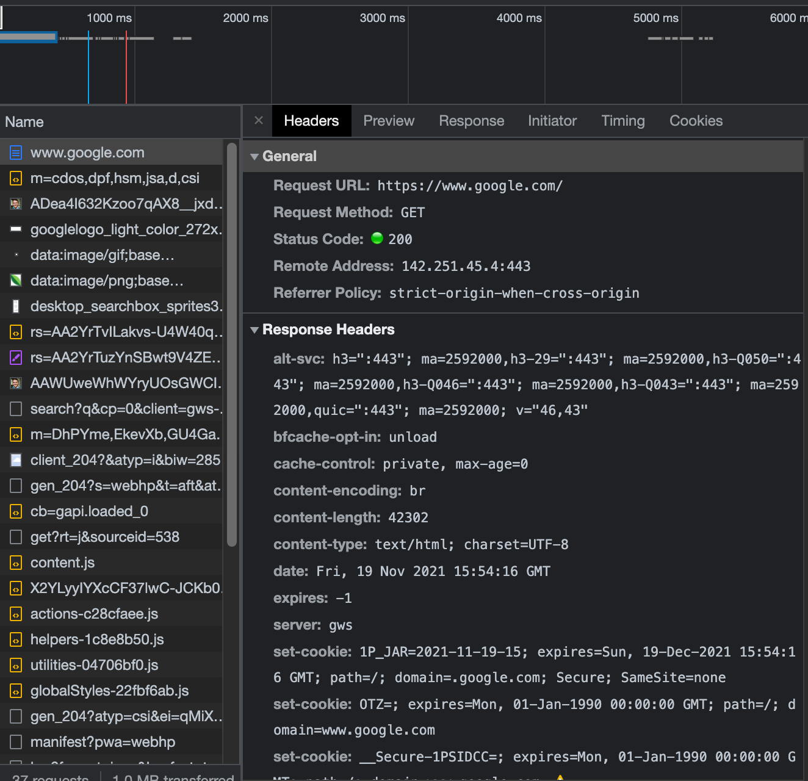

12 HTTP and Application Layer Protocols
TODO: add more on resources, query parameters, and anchors
There are numerous application layer protocols. Some you will see in this book include SSH for direct server access, (S)FTP for file transfers, SMTP for email, LDAP(S) for authentication and authorization, and websockets for persistent bi-directional communication – used for interactive webapps created by the Shiny and Streamlit packages.
We’ll talk more about some of those other protocols later in the book. For now, let’s focus on the one you’ll spend most of your time thinking about – http.
12.0.1 http is the most common application layer protocol
Hyptertext transfer protocol (http) is the protocol that underlies a huge fraction of internet traffic. http defines how a computer can initiate a session with a server, request the server do something, and receive a response.
So whenever you go to a website, http defines how your computer requests the website and the server sends back the various assets that make up the web page, which might include the HTML skeleton for the site, the CSS styling, interactive javascript elements, and more.
http is like the letter you’re sending to your friend. Just like it’s traditional to format a letter starting with the date and a greeting, followed by the letter body, and a signature, http requests and responses include both headers and a body.
The headers define particular metadata about the request or these response. These can include information like the request method, the type of machine that is sending the request, authentication credentials or tokens, and more.
The body is the actual content of the message and what it says will be specific to what you’re trying to do. It’s worth noting that GET requests generally don’t include a body. Instead, any specifics on what is to be fetched are specified through query parameters, the part of the URL that shows up after the ?. They’re often something like, ?first_name=alex&last_name=gold.
Along with the address, there are two other special pieces of metadata in your traffic.
The request method indicates how you’re trying to interact with the server. Most often, you’re fetching something with a GET, updating or changing something with a POST or PUT, or deleting something with a DELETE.
The status code only appears on responses and indicates what happened with your request to the server. Some special codes you’ll quickly learn to recognize are below. The one you’ll (hopefully) see the most is 200, which is a successful response.
12.0.1.1 Special HTTP Codes
As you work more with http traffic, you’ll learn some of the common codes. Here’s a cheatshet for some of the most frequent you’ll see.
| Code | Meaning |
|---|---|
200 |
Everyone’s favorite, a successful response. |
3xx |
Your query was redirected somewhere else, usually ok. |
4xx |
Errors with the request |
400 |
Bad request. This isn’t a request the server can understand. |
401 and 403 |
Unauthorized or forbidden. Often means required authentication hasn’t been provided. |
404 |
Not found. There isn’t any content at the address you’re trying to access. |
5xx |
Errors with the server once your request got there. |
500 |
Server-side error. Your request was received, but there was an error processing it. |
504 |
Gateway timeout. This means that a proxy or gateway between you and the server you’re trying to access timed out before it got a response from the server. |
12.0.2 Understand http traffic by inspecting it
The best way to understand http traffic is to take a close look at some. Luckily, you’ve got an easy tool – your web browser!
Open a new tab in your browser and open your developer tools. How this works will depend on your browser. In Chrome, you’ll go to View > Developer > Developer Tools and then make sure the Network tab is open.
Now, navigate to a URL in your browser (say google.com).
As you do this, you’ll see the traffic pane fill up. These are the requests and responses going back and forth between your computer and the server.
If you click on any of them, there are a few useful things you can learn.

At the top, you can see the timing. This can be helpful in debugging things that take a long time to load. Sometimes it’s helpful to see what stage in the process bogs down.
In the pane below, you can inspect the actual content that is going back and forth between your computer and the server you’re accessing including the request methods, status codes, headers, and bodies.
13 Things that only matter on the internet (DNS, HTTPS)
In Chapter 11 you learned all about how IP addresses are where a resource lives on a computer network. But you’ve been using the internet for a long time and you’ve rarely – if ever – actually used an IP address. What gives?
IP addresses are hard to remember. And worse, they can change when servers are replaced or changed.
To make the internet a little more human-friendly, the creators of the internet built a system called the domain name system (DNS) that translates human-readable domains, like \(google.com\) to the IP addresses where the resources actually are.
13.1 What happened to www?
When the internet was first started, it seemed quite important to differentiate the address where a website would live from, for example, the email domain people at that organization would use.
The www subdomain, short for world wide web, was invented as a way to differentiate the website.
These days, the www subdomain is still technically a subdomain of the main domain, but it is convention to make sure that the www subdomain and the bare domain go to the same place. More on how to do that in the lab.
You can also have resources other the root at /. For example, on my personal website, $alexkgold.space$, the about me page is at \(alexkgold.space/about\). You also control all paths below a domain when you control the domain.
The question of whether to host things on subdomains or paths is well beyond the scope of this book, but generally paths are things that are properly “below” whatever’s at the bare domain and subdomains are often entirely different entities. But that’s just a matter of style and SEO.
You can get the
An IP address really is the address of the resource. You can get the IP address of \(google.com\) using the terminal command nslookup.
At the time of this writing, one of the addresses that comes back is 172.253.115.102. Assuming that address is still valid, you can just put that into your browser’s search bar and get right to \(google.com\).
But that’s not usually what we do. Instead, we use \(google.com\) to get to google. What gives?
If you think back to how a packet gets to where it’s going, we talked about how the packet gets routed to successively higher-level routers until a router knows where the packet is going and sends it back down. It turns out that this process is actually repeated twice – once to lookup the IP address for the domain, and then to actually send the information.
The details of translating a domain into an IP address are quite intricate, but the upshot of this process – called DNS resolution – is that your computer asks for the IP address of the domain you put in, and that query is routed to successively higher levels of DNS servers until it finds one that knows the IP address for the domain you’re trying to reach.
There are two components to a domain, the domain name and the top level domain. A domain maps to an IP address. Many domains can map to one IP address, so you’ll notice that you can access google at either \(google.com\) or \(google.net\).
The top level domain is whatever appears after the .. The internet was created with only a handful of top level domains – .com, .net, and .org were some of the first.
Mmore were opened up over time. In 2013 ICANN – the group that controls how domains are assigned – decided to allow people to register their own top level domains. That’s why there’s been an explosion in websites at top level domains like .io, .ai, and .fun in the last decade or so.
If you, like me, think it’d be fun to have your own top level domain, they are unfortunately not for normal humans. In 2012, the initial application fee was $185,000.
13.1.1 Learning to Hate DNS
As you get deeper into using servers, you will learn to hate DNS with a fiery passion. While it’s necessary so we’re not running around trying to remember incomprehensible IP addresses, it’s also very hard to debug as a server admin.
Let’s say I’ve got the public domain example.com, and I’m taking down the server and putting up a new one. I’ve got to alter the public DNS record so that everyone going to example.com gets routed to the new IP address, and not the old one.
The thing that makes it particularly challenging is that the DNS system is highly decentralized. There are thousands of public DNS servers that a request could get routed to, and many of them may need updating.
Moreover, the simplified description I gave of DNS left one important thing out – when your computer or an intermediate DNS server looks up an IP address for you, it caches it. This is because its likely that if you’ve looked up a domain once, you’re going to do it again soon. This is great if you are using the internet and don’t want to wait for DNS lookups, but when you’re changing the domains on servers you control, it means you need to wait for caches to expire for changes to propagate.
Depending on the changes you’re making, those changes can take up to 24 hours to propagate. After you make a change, if it’s not working, you’re left in a guessing game of whether you made a mistake or it just hasn’t propagated yet. It’s very annoying.
Sometimes, trying a private browsing window will sidestep DNS and other sorts of caches, but not always.
13.2 Troubleshooting networking
Networking can be difficult to manage because there are many places it can go awry. Let’s say you’ve configured a service on your server, but you just can’t seem to access it.
The first thing you’ll want to check is whether it’s a networking issue.
The ping command can be useful for checking whether your server is reachable on the network. For example, here’s what happens when I ping the domain where this book sits.
> ping -o do4ds.com
PING do4ds.com (185.199.110.153): 56 data bytes
64 bytes from 185.199.110.153: icmp_seq=0 ttl=57 time=13.766 ms
--- do4ds.com ping statistics ---
1 packets transmitted, 1 packets received, 0.0% packet loss
round-trip min/avg/max/stddev = 13.766/13.766/13.766/0.000 msThis looks great – it sent 1 packet to the server and got one back. That’s exactly what I want. Seeing an unreachable host or packet loss would be an indication that my networking probably isn’t configured correctly somewhere between me and the server. I generally like to use ping with the -o option for sending just one packet – as opposed to continuously trying.
If ping succeeds but I still can’t access the server, curl is good to check. curl actually attempts to fetch the website at a particular URL. At this point, I’m
A simple way to check for a networking issue is with the curl command. curl attempts to reach a listening service at the URL specified and return what it finds. It’s often useful to use curl with the -I option so it just returns a simple status report, not the full contents of what it finds there.
For example, here’s what I get when I curl CRAN from my machine.
> curl https://cran.r-project.org/ -I
HTTP/1.1 200 OK
Date: Sun, 15 Jan 2023 15:34:19 GMT
Server: Apache
Last-Modified: Mon, 14 Nov 2022 17:33:06 GMT
ETag: "35a-5ed71a1e393e7"
Accept-Ranges: bytes
Content-Length: 858
Vary: Accept-Encoding
Content-Type: text/htmlThe important thing here is that first line. The server is returning a 200 HTTP status code, which means all is well. For more on HTTP status codes and how to interpret them, see Chapter 11.
There are a lot of reasons you might not get a 200 return. The main thing you’ll want to check from within the server is that your service is actually up and running on the port you think it is.
13.3 You should always use https
When you go to a website on the internet, you’ll see the URL prefixed by the https (though it’s sometimes hidden by your browser because it’s assumed). https is actually a mashup that is short for http with secure sockets layer (SSL).
These days, almost everyone actually uses the successor to SSL, transport layer security (TLS). However, because the experience of configuring TLS is identical to SSL, admins usually just talk about configuring SSL even when they mean TLS.
These days, almost every bit of internet traffic is actually https traffic. You will occasionally see http traffic inside private networks where encryption might not be as important – but more and more organizations are requiring end-to-end use of SSL.
Securing your website or server using SSL/TLS is one of the most basic things you can do to make sure your website traffic is safe. You should always configure https – full stop.
SSL/TLS security is accomplished by configuring your site or server to use a SSL certificate (often abbreviated to cert). We’ll go through the details of how to get and configure an SSL certificate in this chapter – but first a little background on how SSL/TLS works.
13.3.1 How SSL/TLS Enhances Security
SSL accomplishes two things for you – identity validation and traffic encryption.
When you go to a website, SSL/TLS is the technology that verifies that you’re actually reaching the website you think you’re reaching. This prevents something called a man-in-the-middle attack where a malicious actor manages to get in between the server and the client of network traffic. So, for example, you might think you’re putting your bank login information into your normal bank website, but there’s a hacker sitting in the middle, reading all of the traffic back and forth.
[TODO: Image of man-in-the-middle]
You can see this in action in your web browser. When you go to a website protected by https, you’ll see a little lock icon to the left of the URL. That means that this website’s SSL certificate matches the website and therefore your computer can verify you’re actually at the website you mean to be at.
But how does your computer know what a valid SSL certificate is? Your computer has a list of trusted Certificate Authorities (CAs) who create, sell, and validate SSL/TLS certificates. So when you navigate to a website, the website sends back a digital signature. Your computer checks the signature against the indicated CA to verify that it was issued to the site in question.
[TODO: image of SSL validation]
The second type of scary scenario SSL prevents is a snooping/sniffing attack. Even if you’re getting to the right place, your traffic travels through many different channels along the way – routers, network switches, and more. This means that someone could theoretically look at all your traffic along the way to its meaningful destination.
When your computer gets back the digital signature to verify the site’s identity, it also prompts an exchange of encryption keys. These keys are used to encrypt traffic back and forth between you and the server so anyone snooping on your message will just see garbled nonsense and not your actual content. You can think of the SSL/TLS encryption as the equivalent of writing a message on a note inside an envelope, rather than on a postcard anyone could read along the way.
13.3.2 Public and Private Certificates
In order to configure your site or server with SSL, there are three steps you’ll want to take: getting an SSL certificate, putting the certificate on the server, and making sure the server only accepts https traffic.
You can either buy an SSL certificate or make one yourself, using what’s called a self-signed cert.
There are a variety of places you can buy an SSL/TLS certificate, in many cases, your domain name registrar can issue you one when you buy your domain.
When you create or buy your cert, you’ll have to choose the scope. A basic SSL certificate covers just the domain itself, formally known as a fully qualified domain name (FQDN). So if you get a basic SSL certificate for www.example.com, www.blog.example.com will not be covered. You can get a wildcard certificate that would cover every subdomain of *.example.com.
But sometimes it’s not feasible to buy certificates. While a basic SSL certificate for a single domain can cost $10 per year or less, wildcard certificates will all the bells and whistles can cost thousands per year. This can get particularly expensive if you’ve got a lot of domains for some reason.
Moreover, there are times when you can’t buy a certificate. If you’re encrypting traffic inside a private network, you will need certificates for hosts or IP addresses that are only valid inside the private network, so there’s no public CA to validate them.
There are two potential avenues to follow. In some cases, like inside a private network, you want SSL/TLS for the encryption, but don’t really care about the identity validation part. In this case, it’s usually possible to skip that identity validation part and automatically trust the certificate for encryption purposes.
It’s also possible to create your own private CA, which would verify all your SSL certificates. This is pretty common in large organizations. At some point, every server and laptop needs to have the private CA added to its set of trusted certificate validators.
A warning: it is deceptively easy to generate and configure a self-signed SSL certificate. It’s usually just a few lines of shell commands to create a certificate, and adding the certificate to your server or website is usually just a copy/paste affair.
However, it’s pretty common to run into problems with self-signed certs or private CAs. Making sure the certificate chain is correct, or running into a piece of software that doesn’t ignore the identity validation piece right is pretty common. This shouldn’t dissuade you from using SSL/TLS. It’s an essential, and basic, component of any security plan – but using a self-signed cert probably isn’t as easy as it seems.
When you configure your site or server, there will likely be an option to redirect all http traffic to https traffic. If your server or site is open to the internet, you should set this option.
13.4 Lab: Getting a domain and SSL for your server
In this lab, we’re going to go from having to SSH tunnel to be able to use your data science workbench to making it available over the internet in general. That means we’re going to have to do 3 things: configure the networking to allow HTTP traffic, configure a real domain for our server, and configure SSL to keep our traffic safe.
We know that right now our RStudio Server is ready to serve traffic inside our server on port 8787 and JupyterHub is on 8000, but nothing can get to them! So the first step is to allow traffic to get to them.
Obviously, the easiest thing we could do would be to just open up ports 8787 and 8000 to the world. This works! If you want to try it, go to the settings for your server’s security group and just add a custom TCP rule allowing access to ports 8787 and 8000 from anywhere. If you visit <server address>:8787 you should get RStudio (login with test-user and your password) and if you visit 8000, you can get to Jupyter.
It works!
BUT now your users have to remember these arbitrary ports to use your server. It’s also insecure. There isn’t a good way to secure these ports with SSL.1
So we’re going to put a proxy in front of our two editors that will allow people to go to either RStudio or Jupyter on subpaths.
There are two popular open source options for proxies – nginx and apache. We’re going to use nginx. Configuring nginx is generally a pretty painful experience – it’s a matter of making sure there are no typos, and debugging can be rather difficult. Until you get really comfortable with proxies, you’ll probably mostly just copy/paste config lines in. That’s what we’re going to do here.
Here are the steps:
- Install nginx with
sudo apt install nginx. - Save a copy of
nginx.conf,cp /etc/nginx/nginx.conf /etc/nginx/nginx-default.conf. - Replace the
httpblock in the default nginx.conf with the following. Put the following into the configsudo vim /etc/nginx/nginx.conf. - Test that your configuration is valid
sudo nginx -t. - Start nginx
sudo systemctl start nginx. If you see nothing all is well.
If you need to change anything, update the config and then restart with sudo systemctl restart nginx.
QUESTION - is this too complicated? Should I make it an either/or and then allow people to do both as a challenge?
/etc/nginx/nginx.conf
http {
\# Enable websockets (needed for Shiny)
map \$http_upgrade \$connection_upgrade {
default upgrade; '' close;
}
server { listen 80;
location /rstudio/ {
# Needed only for a custom path prefix of /rstudio
rewrite ^/rstudio/(.*)$ /$1 break;
# Use http here when ssl-enabled=0 is set in rserver.conf
proxy_pass http://localhost:8787;
proxy_http_version 1.1;
proxy_set_header Upgrade $http_upgrade;
proxy_set_header Connection $connection_upgrade;
proxy_read_timeout 20d;
# Not needed if www-root-path is set in rserver.conf
proxy_set_header X-RStudio-Root-Path /rstudio;
# Optionally, use an explicit hostname and omit the port if using 80/443
proxy_set_header Host $host:$server_port;
}
location /jupyter/ {
# NOTE important to also set base url of jupyterhub to /jupyter in its config
proxy_pass http://127.0.0a.1:8000;
proxy_redirect off;
proxy_set_header X-Real-IP $remote_addr;
proxy_set_header Host $host;
proxy_set_header X-Forwarded-For $proxy_add_x_forwarded_for;
proxy_set_header X-Forwarded-Proto $scheme;
# websocket headers
proxy_set_header Upgrade $http_upgrade;
proxy_set_header Connection $connection_upgrade;
}
}There’s one more thing you’ll have to do, which is to let RStudio and JupyterHub know that they’re on a subpath. Complex web experences like RStudio and JupyterHub frequently send people to a different subpath internally. In order to do so properly, they need to know to prepend all of those requests with the subpath.
RStudio accepts a header from the proxy that lets it know what path it’s on (see the X-RStudio-Root-Path header line in the nginx config). Jupyter needs to be explicitly told.
First we’ll need to get to the autogenerated config with
jupyterhub --generate-config
sudo mkdir /etc/jupyterhub
sudo mv jupyterhub_config.py /etc/jupyterhubFind the line you want to change – you can search in vim with / <thing you're searching for>. Go to the next hit with n.
When you get to the line that reads # c.JupyterHub.bind_url = 'http://:8000', uncomment and add a /jupyter on the end, so it reads c.JupyterHub.bind_url = 'http://:8000/jupyter.
Start jupyterhub with a specific config file.
jupyterhub -f /etc/jupyterhub/jupyterhub_config.py
### How to configure DNS for your server
From the perspective of someone trying to set up their own website, there’s only one DNS server that matters to you personally – the DNS server for your domain name registrar.
Domain name registrars are the companies that actually own domains. You can buy or rent one from them in order to have a domain on the internet. So let’s say you take the data science server you set up in lab 1 and decide that you want to host it at a real domain.
Your first stop would be a domain name registrar where you’d find an available domain you like and pull out your credit card.
Costs for domain names vary widely. Buying a meaningless domain in a less popular top-level domain, say ladskfmlsdf.me can cost as little as $3 per year. On the other hand, buying a .com domain that’s a real word or phrase can be a few thousand dollars – and there are articles every few years about some major company accidentally allowing their domain name to lapse and ransoming it back for stupid amounts of money.
So, conceptually, it’s easy to understand how a domain comes to stand in for an IP address, with DNS being the directory that ties the two together.
The harder part is the nitty gritty of how you accomplish that mapping yourself, which we’ll get into now.
Configuration of DNS is done by way of records, of which there are a menagerie of types you can configure. Luckily, most simple configurations only need CNAME and A records.
Here’s an imaginary DNS record table for the domain example.com:
| Path/Host | Type | Target |
|---|---|---|
@ |
A | 143.122.8.32 |
www |
CNAME | example.com |
* |
A | 143.122.8.33 |
Let’s go through how to read this table.
Since we’re configuring example.com, the paths/hosts in this table are relative to example.com.
In the first row we’re configuring an A record to go to the target IP address. A records (or their IPv6 cousin AAAA records) map a domain to an actual IP address. The path @ is a special symbol meaning exact match. So by this configuration, any traffic to example.com will be passed straight through to the specified IP address.
The second row deals with traffic to the www subdomain. CNAME records alias sub-domains. They’re most frequently used to map sub-domains to the main domain. Since this is a CNAME record for example.com, this record indicates that traffic to www.example.com should be treated exactly like traffic to example.com. Some domain providers do automatic redirection of www traffic, and so this row may not be necessary in some configurations.
The last record uses the wildcard symbol * to send all subdomain traffic that’s not already spoken for – say blog.example.com or info.example.com directly to the IP address specified. In this case, I’m sending all of those subdomains to a different IP address, maybe a 404 (not found) page – or maybe I’m serving all the subdomains off a different server.
So what happens is that your query goes through several layers of public DNS servers to get to the DNS entry for your domain name registrar. In many cases, you’ll directly configure your domain name registrar to point to your website or server – but you also can configure the domain name registrar to point at another set of DNS servers you actually control with an NS record.
If you’re setting up your own server, this probably isn’t the case, but some large enterprises do run their own private DNS servers.
13.4.0.1 Actually Doing It
Allocate an Elastic IP. If you’ve restarted your server, you’ve probably noticed that the IP address changed! This can be a real pain if you have to reconfigure your DNS every time. AWS offers a service called Elastic IP that gives you an IP address that won’t change that you can use with your instance, even if you restart it.
As of this writing, Elastic IPs are free as long as it’s associated with a single running EC2 instance. You get charged if they’re not active – basically AWS doesn’t want you hoarding Elastic IPs. Great – just make sure to give back the elastic IP if you take down your instance.
::: callout-note If you were doing this for real, and not in a somewhat arbitrary order that’s grouped by topic, it would’ve made sense to set up the elastic IP as soon as you brought the server up so you only would’ve used that IP address. :::
Go to Elastic IP and click allocate. Once it has been allocated, you'll need to associate it with the existing Instance you created. Choose the instance and the default private IP address.I was given the Elastic IP 52.70.205.182. So now if I go to 52.70.205.182, I get my server.
Note that once you make this change, your server will no longer be available at its old IP address, so you’ll have to ssh in at the new one. If you have SSH terminals open when you make the change, they will break.
This part will not be free, but it can be very cheap. You’ll have to actually buy a domain name. The easiest way to do this is via AWS’s Route53 service. You can get domains on Route53 for as little as $9 per year. But there are cheaper services. For example, I was able to get the domain do4ds-lab.shop for $1.98 for a year on namecheap.com.
Once you’ve got your domain, you have to configure your DNS. You’ll have to create 2 A records – one each for the @ host and the * host pointing to your IP and one for the CNAME at the www with the value being your bare domain.
So in NameCheap, my Advanced DNS configuration looks like this:
Now you just have to be patient. Unfortunately DNS takes time to propagate. After a few minutes, your server should be reachable at your domain. Wow!
### Getting a cert of your own
There's a wonderful service called letsencrypt that is trying to make the world more secure, acting as a free CA, and handing out free SSL certificates to anyone who needs one.They have a utility called certbot, which you just install on your server and it can autogenerate an SSL certificate, install it on the server, and even update your nginx configuration!
For anyone who’s never dealt with self-signing certificates in the past, let me tell you, this is magical!
In our nginx configuration, we'll need to add a line certbot will use to know which site to generate the certificate for.So inside the nginx configuration’s server block, add
server_name do4ds-lab.shop www.do4ds-lab.shop;
substituting in your domain for mine. Make sure to do both the bare domain and the www subdomain.
At that point, you can just install certbot and let it go! As of this writing, that was as simple as running
sudo su apt-get install certbot apt-get install python3-certbot-nginx systemctl restart nginx sudo certbot –nginx -d do4ds-lab.shop -d www.do4ds-lab.shop
If you google “configure nginx with letsencrypt”, there’s a great article by someone at Nginx walking you through the process if the commands above change.
I’d recommend you take a moment and inspect the /etc/nginx/nginx.conf file to look at what certbot added. You’ll notice two things – one is inside the server block. You’ll notice that the listen 80 is gone. We’re no longer listening for HTTP traffic. Instead there’s a listen 443 – the default port for SSL, and a bunch of stuff that says # managed by Certbot that tells nginx where to find the SSL certificate.
Scrolling down a little, there’s a new server block that is listening on 80. This block returns a 301, which you might recall is a redirect code (specifically for a permanent redirect) sending all HTTP traffic to HTTPS.
Before we exit and test it out, let’s do one more thing. RStudio does a bunch of sending traffic back to itself. For that reason, the /rstudio proxy location also needs to know to upgrade traffic from HTTP to HTTPS.
So add the following line to the nginx config:
proxy_set_header X-Forwarded-Proto https; #redirect URLs back to httpsProto here is short for protocol. So this is letting RStudio Server know that when it forwards or redirects traffic, it should do so to HTTPS, not HTTP.
Ok -- let's try out our newly-secured workbench!Go to the URL your server is hosted at, and you’ll find that…it’s broken again.
Before you read along, think for just a moment. Why is it broken? Maybe scroll up to the image of the different layers of networking. Which one still isn’t open?
If you thought of the AWS instance security group, you're right! You'll remember that by default it was open to SSH traffic on port `22`, and we opened it to `HTTP` traffic on `80`. But now that we're sending it `HTTPS` traffic on `443`, you'll have to open it to that traffic as well.Add a rule to allow HTTPS traffic on 443 from anywhere.
NOW you should be able to go to <your-domain>/rstudio and get to RStudio and <your-domain>/jupyter to get to JupyterHub! Voila!
Note that you *also* can now SSH into `ssh test-user@<domain>`, so you don't ever need to remember IP Addresses for day-to-day operations.13.5 Comprehension Questions
- Write down the step-by-step procedure that is followed when you sit down at your laptop and type google.com into the search bar. Your explanation should include the following terms: URL, domain, DNS, protocol, HTTP, HTTPS, Default Address, Router
- Create a mind map of the following terms: Application Layer Protocol, HTTP, HTTPS, SSH, Port, 22, 80, 443
- In the following URLs, what are the domain, top-level domain, path, subdomain, query parameters?
https://blog.example.com/2022-10-30
facebook.com?search=alex.gold
https://alexkgold.space/mfy.html
- Write a mind map of the following terms: HTTP, HTTPS, SSL, TLS, CA, Public Certificate, Private Certificate, 443
As of this writing, JupyterHub supports configuring SSL in the product, but RStudio Server does not. Posit Workbench, the paid version of RStudio Server does support SSL configuration.↩︎